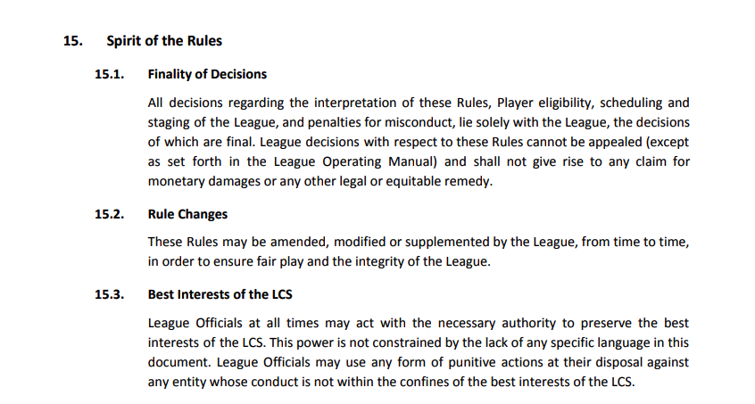

Riot Games & Developer-Owned eSports Leagues: Lack of Appeals, Asymmetrical Market Information, and Power Dynamics.
(Kayle, a Champion that represented Riot's removed in-game Tribunal System previously used for punishing player behavior. Image via Riot Games).
Competitive Rulings and Policy Abuse
All professional, officially-recognized League of Legends leagues feature rulesets that regulate player and team conduct, which provide Riot Games with the authority to subjectively rule on perceived rule violations. If you want to learn more about exact issues Riot's past rulings, I completed a full historical analysis of every competitive ruling Riot has made in North America since 2011 (featured promptly on the Timelines page accessed through the Explore menu). The results of the analysis were not surprising. After review, it is clear that Riot has consistently made rulings without providing evidence to punished parties and has frequently shown preferential treatment/leniency for certain teams based on comparative analysis. Riot has improved its consistency overtime with the implementation of certain standardization policies such as the Global Penalty Index (GPI), which details clear definitions of major offenses and possible minimum and maximum penalties. However, Riot's most recent LCS ruleset still retains its most criticized policy, known as "Rule 15.1" or "Finality of Decisions," which states that "all decisions regarding the interpretation of these Rules, Player eligibility, scheduling and staging of the League, and penalties for misconduct, lie solely with the League, the decisions of which are final. League decisions with respect to these Rules cannot be appealed (except as set forth in the League Operating Manual) and shall not give rise to any claim for monetary damages or any other legal or equitable remedy." This means that regardless of how circumstantial the evidence used in a ruling is or how poorly Riot conducted investigation and evidence review, a ruling cannot be appealed. Rule 15.1 also mirrors the connotations of forced arbitration policies included in Riot employee contracts (highlighted in the previous section) which also attempt to prevent backlash from Riot's intentional and unintentional legal violations. Additionally, Riot and LCS officials are granted even more non-reviewable judicial power by "Rule 15.3" or the "Best Interests of the LCS" clause, which provides LCS officials with "the necessary authority to preserve the best interests of the LCS..not constrained by the lack of any specific language in this document." This rule allows for LCS officials to "use any form of punitive actions at their disposal against any entity whose conduct is not within the confines of the best interests of the LCS."

("Spirit of the Rules" Clause from the 2019 LCS Ruleset.)
The key phrase to focus on is "the best interests of the LCS." This implies that whatever Riot subjectively determines to be "conduct" not in the "best" interest of the LCS can be punished to any extent, at the least within the parameters set by the GPI (although there is a limited list of violations included in the GPI, meaning any unincluded violations can receive unbounded levels of punishment). It may seem unfair to accuse Riot of attempting to manipulate their own policies intended to protect the integrity of the LCS, but there are a couple reasons to be wary.
- First and foremost, the precedent Riot has set in its negotiations regarding its forced arbitration policies and their effect on the well-being of Riot developers indicates that they would rather avoid litigation than provide adequate compensation and protection for abused or mispunished parties.
- Second, Riot has already been shown to misuse the market power their LCS policies provide them. In their 2016 ruling against ex-LCS and ex-CS teams Renegades (REN) and Team Dragon Knights (TDK) (analyzed in slide 24 of the competitive ruling timeline), both teams were permanently banned from competitive play and were forced to sell their LCS slots within 10 days of the ruling date. Neither team was provided with the evidence used to support claims made against them, and were simply forced out of team ownership without any opportunity for appeal or secondary evidence review. Most importantly, Riot's rulings do not provide any safety net for those affected by these rulings, such as the players who lost their professional positions and stable source of income immediately. Not only did Riot ban these teams, force them to sell their LCS slots, and shatter the financial stability of at least ten employees (coaches and additional staff also likely lost their jobs), but also allegedly presented them with recommendations of interested stakeholders to replace them. According to a Twitlonger post made by former TDK CEO Chris Shim, Riot suggested a "prominent NFL team" interested in their slot only three days after the competitive ruling was made.
Obviously, it is impossible to determine whether these teams did indeed deserve to be removed from the LCS or whether Riot had been planning to replace them with a previously selected stakeholder, but the fact that it is up for debate should be intrinsically concerning. The lack of consideration for negatively affected parties and the blatant disregard for adequate, reviewable evidence indicates that Riot is not remotely concerned with the repercussions of their actions and solely make decisions that protect their self-defined "best interests of the LCS."
If Riot can ban team ownership without any appeals or required evidence release, they can ban someone from receiving significant revenue (especially now with 35% revenue share for teams as of 2018, equating to around 3.5% per team of total LCS revenue varying by competitive performance) at their own discretion. That is far too much bargaining power and control to allow a singe developer entity to exercise, especially one that can already:
- 1) change in-game rules to indirectly modify the effectiveness of given players (see patching section of portal on working conditions and burnout culture).
- 2) use copyright ownership to restrict broadcasting rights in essentially any context (see precedent set by Blizzard Entertainment's copyright disputes with KeSPA and MBC from 2010).
- 3) benefit indirectly more than any player or team through the additional positive externalities generated by eSports (such as increased popularity of the game itself) that bring increased in-game microtransactions.
Asymmetrical market information and power dynamics
As previously discussed, professional LCS players are very much on the young side with an estimated average age of 21.2. This is only important because it means that LCS players are, on average, guaranteed to have extremely limited prior work experience. Their LCS team and Riot Games are likely some of their first employers, let alone their first employers offering them a salaried position. Their young age also implies that many LCS players have only completed high school degrees and probably have state-mandated high school financial literacy course knowledge at best. When players enter negotiations, they face team owners, LCS officials, and contracts, all of which reflect years of industry experience and legal knowledge. Therefore, it is near impossible for players to come away with a balanced, mutually beneficial contract. This is especially true for incoming players who likely cannot afford to consult a lawyer/agent or simply are not informed enough to know to how or when it is appropriate to do so.
Another important facet of LCS contract negotiations to recognize is that salary information is not publically or privately available to LCS players. This completely contrasts with traditional sports, where the expectation is for salaries to be public (googling "MLB salaries" or "NFL salaries" quickly gives both yearly and gross values of income from player contacts for all contracted-players). LCS players cannot reference salaries made by other players to quickly understand their market value, and must go off of rumors or precedent set by their previous contracts to determine whether they are being properly valued in team offers. Although LCS players are guaranteed minimum player compensation (MPC) of at least $75,000 (as of 2018), there is currently no information available for what is commonly expected in a standard player contract. ESPN reported in 2017 that Riot was planning on requiring teams to classify players as employees rather than independent contractors—which would entitle all LCS players to benefits such as healthcare and 401(k) retirement plans—but there is yet to be any official Riot announcement or document confirming this. This means that outside of basic compensation, players do not know what benefits they should be receiving, how they should be contractually defined (employee v. independent contractor), what split of sponsor revenue they should be earning, what costs should be reimbursed by their team, etc.
(2015 Video by LoL Content Creator Travis Gafford on the Need for Public Salaries in the LCS. Travis Gafford / Gamespot)
Team owners are likely to be sharing salary, revenue split, and benefits information (whether formally or informally) meaning that they have an objectively better conception of what constitutes a player-friendly v. a non-player-friendly contract. This type of information assymmetry makes negotiations difficult for players, as they are automatically at a two-pronged level of disadvantage: one due to their lack of business experience and the other due to limited industry transparency. Until proper salary, benefits, and contract information is widely available for current and future LCS players to access, players are likely to be undervalued and misclassified (as independent contractors instead of employees).